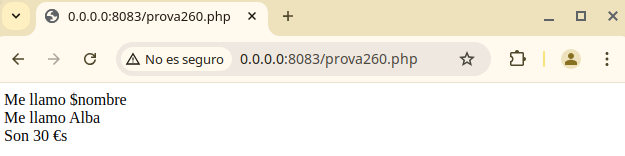
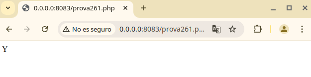
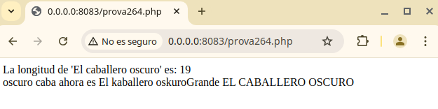
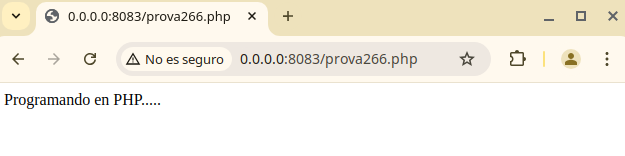

2.6. Funcions predefinides¶
2.6. Funcions predefinides¶
El llenguatge oferix un ventall de funcions ja definides, agrupades per la seua funcionalitat:
- Pàgina oficial: https://www.php.net/manual/es/funcref.php.
- w3schools.com
1. Cadenes¶
Ja hem vist que es poden crear amb:
- cometes simples (
'', sense interpretació) o - cometes dobles (
"", interpreten el contingut i les seqüències d'escapament\n,\t,\$,{, … - magic quotes):
<?php
$nombre = "Alba";
$moneda = "€";
echo 'Me llamo $nombre';
echo "Me llamo $nombre";
echo "Son 30 {$moneda}s"
?>

S'accedix als caràcters com si fora un array.
<?php
$cadena = "Yo soy Batman";
$ygriega = $cadena[0];
echo $ygriega;
?>

A més d'echo, podem mostrar les cadenes mitjançant la funció printf. Esta funció ve heretada del llenguatge C; en la cadena s'indica el tipus de dada que es formatarà i genera una eixida formatada. Si volem guardar el resultat en una variable, podem utilitzar sprintf.
<?php
$num = 23.2;
$nombre = "M. Jordan";
// %d -> número entero (convierte el float a int), %s -> string
// ¿asigna 25 caracteres a la cadena? No
printf("%25s llevaba el número %d<br/>", $nombre, $num);
// %f -> con '- rellenamos hasta los 25 caracteres a la izquierda
printf("%'-25s llevaba el número %5.2f<br/>", $nombre, $num);
// %s -> con '- rellenamos hasta los 25 caracteres a la derecha
// %5.2f -> dos dígitos para parte entera + . + dos dígitos para parte decimal
$frase = sprintf("%'--25s llevaba el número %5.2f<br/>", $nombre, $num);
echo $frase;
?>

Tenim molts més exemples en https://www.w3schools.com/php/func_string_printf.asp.
1.1. Operacions bàsiques¶
Totes les funcions es poden consultar en https://www.php.net/manual/es/ref.strings.php.
Les més importants són:
strlen: obté la longitud d'una cadena i retorna un número enter.substr: retorna una subcadena de la cadena original.str_replace: reemplaça caràcters en una cadena.strtoloweristrtoupper: Transformen una cadena de caràcters en la mateixa cadena en minúscules o majúscules respectivament.
<?php
$cadena = "El caballero oscuro";
$tam = strlen($cadena);
echo "La longitud de '$cadena' es: $tam <br />";
$oscuro = substr($cadena, 13); // desde 13 al final
$caba = substr($cadena, 3, 4); // desde 3, 4 letras
$katman = str_replace("c", "k", $cadena);
echo "$oscuro $caba ahora es $katman";
echo "Grande ".strtoupper($cadena);
?>

Si volem treballar amb caràcters ASCII de manera individual, són útils les funcions:
chr: obté el caràcter a partir d'un ASCII.ord: obté l'ASCII d'un caràcter.
<?php
function despues(string $letra): string {
$asciiLetra = ord($letra);
return chr($asciiLetra + 1);
}
echo despues("B");
?>

Si volem netejar cadenes, tenim les funcions:
trim: elimina els espais al principi i al final.ltrim/rtrimochop: Elimina els espais inicials / finals d'una cadena.str_pad: farcix la cadena fins a una longitud especificada i amb el caràcter o caràcters especificats.
<?php
$cadena = " Programando en PHP ";
$limpia = trim($cadena); // "Programando en PHP"
$sucia = str_pad($limpia, 23, "."); // "Programando en PHP....."
echo $sucia;
?>

1.2. Comparant i buscant¶
La comparació de cadenes pot ser amb conversió de tipus mitjançant == o estricta amb ===. També funcionen els operadors < i > si totes dues són cadenes.
En comparar cadenes amb valors numèrics podem utilitzar:
strcmp:0si les cadenes són iguals,<0si a és menor que b, o>0si a és major que b.strcasecmp: les passa a minúscules i compara.strncmp/strncasecmp: compara els N primers caràcters.strnatcmp: comparacions naturals.
<?php
$frase1 = "Alfa";
$frase2 = "Alfa";
$frase3 = "Beta";
$frase4 = "Alfa5";
$frase5 = "Alfa10";
var_dump( $frase1 == $frase2 ); // true
var_dump( $frase1 === $frase2 ); // true
var_dump( strcmp($frase1, $frase2) ); // 0
var_dump( strncmp($frase1, $frase5, 3) ); // 0
var_dump( $frase2 < $frase3 ); // true
var_dump( strcmp($frase2, $frase3) ); // -1
var_dump( $frase4 < $frase5 ); // false
var_dump( strcmp($frase4, $frase5) ); // 4 → f4 > f5
var_dump( strnatcmp($frase4, $frase5) ); // -1 → f4 < f5
?>

Si el que volem és buscar dins d'una cadena, tenim:
strpos/strrpos: busca en una cadena i retorna la posició de la primera/última ocurrència.strstr/strchr (alias): busca una cadena i retorna la subcadena a partir d'on l'ha trobada.stristr: ignora les majúscules.
<?php
$frase = "Quien busca encuentra, eso dicen, a veces";
$pos1 = strpos($frase, ","); // encuentra la primera coma
$pos2 = strrpos($frase, ","); // encuentra la última coma
$trasComa = strstr($frase, ","); // ", eso dicen, a veces"
echo $pos1."<br />";
echo $pos2."<br />";
echo $trasComa."<br />";
?>

Si volem esbrinar què contenen les cadenes, tenim un conjunt de funcions de comprovació de tipus, conegudes com les funcions ctype, que retornen un booleà:
ctype_alpha→ lletresctype_alnum→ alfanumèricsctype_digit→ dígitsctype_punct→ caràcters de puntuació, sense espaisctype_space→ són espais, tabulador, salt de línia
<?php
$prueba1 = "hola";
$prueba2 = "hola33";
$prueba3 = "33";
$prueba4 = ",.()[]";
$prueba5 = " ,.()[]";
echo ctype_alpha($prueba1)."<br>"; // true
echo ctype_alnum($prueba2)."<br>"; // true
echo ctype_digit($prueba3)."<br>"; // true
echo ctype_punct($prueba4)."<br>"; // true
echo ctype_space($prueba5)."<br>"; // false
echo ctype_space($prueba5[0])."<br>"; // true
?>

1.3. Treballant amb subcadenes¶
Si volem trencar les cadenes en trossos, tenim:
explode: convertix en array la cadena mitjançant un separador.implode/join: passa un array a cadena amb un separador.str_split/chunk_split: passa una cadena a un array/cadena cada X caràcters.
<?php
$frase = "Quien busca encuentra, eso dicen, a veces";
$partes = explode(",", $frase);
// Salida con bucle for
// SALIDA: ["Quien busca encuentra","eso dicen","a veces"]
for ($i = 0; $i < count($partes); $i++) {
echo $partes[$i] . "<br>";
}
$ciudades = ["Elche", "Aspe", "Alicante"];
$cadenaCiudades = implode(">", $ciudades);
print_r($cadenaCiudades."<br/>"); // salida con print_r
// SALIDA: "Elche>Aspe>Alicante";
$partes3cadena = chunk_split($frase, 3);
// SALIDA: un string
// "Qui en bus ca enc uen tra , e so dic en, a vec es "
$partes3array = str_split($frase, 3);
print_r($partes3array); // salida con print_
// salida con funcion json_encode
// SALIDA: un array
// ["Qui", "en ", "bus", "ca ", "enc", …]
echo json_encode($partes3array);
?>

Si volem treballar amb tokens:
strtok(cadena, separador).- i dins del bucle:
strtok(separador).
Finalment, per a separar-la en funció del format:
sscanf: al revés quesprintf, crea un array a partir de la cadena i el patró.
Finalment, altres operacions que podem realitzar per a treballar amb subcadenes són:
substr_count: nombre de vegades que apareix la subcadena dins de la cadena.substr_replace: reemplaça part de la cadena a partir de la seua posició i, opcionalment, longitud.
<?php
$batman = "Bruce Wayne es Batman";
$empresa = substr($batman, 6, 5); // Wayne
echo $empresa."<br />";
$bes = substr_count($batman, "B"); // 2
echo $bes."<br />";
// Bruce Wayne es camarero
$camarero1 = substr_replace($batman, "camarero", 15);
$camarero2 = substr_replace($batman, "camarero", -6); // quita 6 desde el final
// Bruno es Batman
$bruno = substr_replace($batman, "Bruno", 0, 11);
echo $bruno."<br />";
?>

També disposem d'una sèrie de funcions que faciliten les codificacions des de i cap a HTML:
htmlentities: convertix a entitats HTML, per exemple,áperá,ñperñ,<per<, etc..htmlspecialchars: ídem però només amb els caràcters especials (&,",',<,>, ...)striptags: elimina etiquetes HTML.nl2br: canvia salts de línia per<br />.rawurlencode/rawurldecode: codifica/descodifica una URL (espais, ...).
Estes funcions les utilitzarem més avant en la unitat temàtica 4. Programació Web.
2. Matemàtiques¶
Disposem tant de constants com de funcions ja definides per a treballar amb operacions matemàtiques: https://www.php.net/manual/es/ref.math.php.
Constants ja definides:
M_PI,M_E,M_EULER,M_LN2,M_LOG2EPHP_INT_MAX,PHP_FLOAT_MAX
Funcions de càlcul:
pow,sqrt,log,decbin,bindec,decoct,dechex,base_convert,max,min
Funcions trigonomètriques:
sin,cos,tan,deg2rad,rad2deg
Funcions per a treballar amb números aleatoris:
rand,mt_rand(més ràpida).
Encara que la majoria són molt específiques de problemes matemàtics / estadístics, és molt comú que hàgem d'arredonir i/o formatar els càlculs abans de mostrar-los a l'usuari.
Mitjançant la funció number_format(numero, cantidadDecimales, separadorDecimales, separadorMiles) podem passar números a cadena amb decimals i/o separadors de decimals i/o de milers.
<?php
$nf = 1234.5678;
echo number_format($nf, 2); // 1,234.57
echo number_format($nf, 2, "M", "#"); // 1#234M57
?>

Per a arredonir, tenim abs per al valor absolut i round per a arredonir, ceil per a l'aproximació per excés i floor per defecte.
<?php
$siete = floor($num); // SALIDA: 7
echo $siete."<br />";
$ocho = ceil($num); // SALIDA: 8
echo $ocho."<br />";
$otro = 4.49;
$cuatro = round($otro); // SALIDA: 4
echo $cuatro."<br />";
$cuatrocinco = round($otro, 1); // SALIDA: 4.5
echo $cuatrocinco."<br />";
$cinco = round($cuatrocinco); // SALIDA: 5
echo $cinco."<br />";
?>

3. Tipus de dades¶
Finalment, per a realitzar conversions de dades o si volem treballar amb tipus de dades, tenim les funcions següents:
floatval,intval,strval: retorna una variable del tipus de la funció indicada.settype: força la conversió.gettype: obté el tipus.is_int,is_float,is_string,is_array,is_object: retorna un booleà a partir del tipus rebut.
<?php
$uno = 1;
var_dump(is_int($uno)); // true
$unofloat = floatval($uno);
settype($uno, "string");
var_dump(is_int($uno)); // false
var_dump(is_string($uno)); // true
settype($uno, "float");
var_dump(is_int($uno)); // false
var_dump(is_float($uno)); // true
var_dump(is_int(intval($uno))); // true
?>

Exercicis a realitzar
- Exercici 251
- Exercici 252
- Exercici 253
- Exercici 254
- Exercici 255
- Exercici 256
- Exercici 257
- Exercici 258
- Exercici 259
- Exercici 260
- Exercici 261